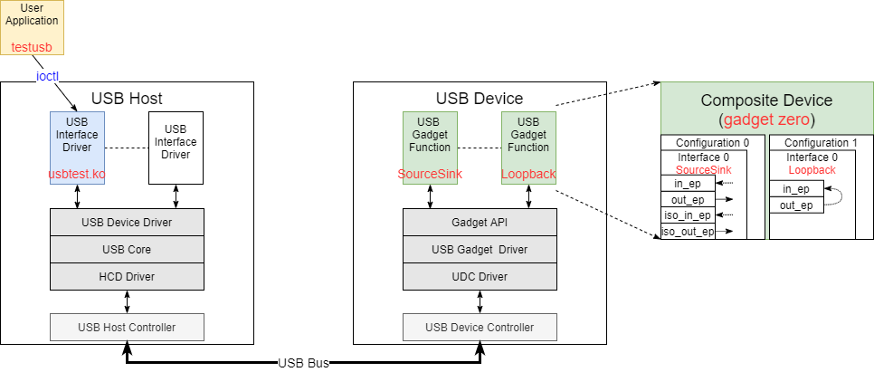

7.12.3. 测试指南¶
7.12.3.1. 测试方案介绍¶
在测试 USB 时，普通的做法是找一些 U 盘、鼠标、键盘 等外设来做一些测试，但是这些测试还是偏上层偏功能的。相比较 HC (USB Host Controller) 和 UDC (USB Device Controller) 按照USB协议提供的完整功能来说，这种测试验证时不充分的。
在 Linux Kernel 中对 HC/UDC 有一套专有的测试方案，在底层对 control/bulk/int/iso 几种 endpoint 进行针对性的功能和压力测试。

上图的测试方案由几部分组成：
1、Device 侧的
gadget zero测试设备，提供了测试通道。2、Host 侧的
usbtest.ko测试驱动，封装了 30 个 endpoint 层级的测试用例。3、Host 侧的
testusb用户程序，用来调用usbtest.ko提供的测试用例。
7.12.3.2. Device 侧 gadget zero¶
提供测试需要的Device设备有很多种方式，例如可用使用专门的测试 Device 里面烧录专有的测试 Firmware。节约成本的方式还是使用 Linux gadget 功能来动态模拟 USB Device 设备。针对 USB 测试，Linux 专门提供了 gadget zero 设备。
7.12.3.2.1. Device 创建¶
gadget zero 的核心是创建一个 Composite Device ，其包含了两个 Configuration ，其中一个 Configuration 0 包含 SourceSink Function/Interface ，另一个 Configuration 1 包含 Loopback Function/Interface 。某一时刻只能选择使用一个 Configuration ，通常情况下使用 Configuration 0 即 SourceSink 的功能。
gadget zero Device 由两种方式创建：
1、通过
zero_driver创建，只要把对应驱动文件drivers\usb\gadget\legacy\zero.c编译进内核即可。2、通过
functionfs动态创建，这种方式更灵活，实例命令如下：
mount -t configfs none /sys/kernel/config
cd /sys/kernel/config/usb_gadget
mkdir g2
cd g2
echo "0x04e8" > idVendor
echo "0x2d01" > idProduct
mkdir configs/c.1
mkdir configs/c.2
mkdir functions/Loopback.0
mkdir functions/SourceSink.0
mkdir strings/0x409
mkdir configs/c.1/strings/0x409
mkdir configs/c.2/strings/0x409
echo "0x0525" > idVendor
echo "0xa4a0" > idProduct
echo "0123456789" > strings/0x409/serialnumber
echo "Samsung Inc." > strings/0x409/manufacturer
echo "Bar Gadget" > strings/0x409/product
echo "Conf 1" > configs/c.1/strings/0x409/configuration
echo "Conf 2" > configs/c.2/strings/0x409/configuration
echo 120 > configs/c.1/MaxPower
// SourceSink：驱动 set configuration 会选取 第一个 configuration
ln -s functions/Loopback.0 configs/c.2
ln -s functions/SourceSink.0 configs/c.1
echo 4100000.udc-controller > UDC
整个过程就是创建了一个 Vendor ID = 0x0525 、 Product ID = 0xa4a0 的 Composite Device ，在 Host 侧可以查看这个设备：
$ lsusb -s 1:3
Bus 001 Device 003: ID 0525:a4a0 Netchip Technology, Inc. Linux-USB "Gadget Zero"
$ lsusb -v -s 1:3
Bus 001 Device 003: ID 0525:a4a0 Netchip Technology, Inc. Linux-USB "Gadget Zero"
Couldn't open device, some information will be missing
Device Descriptor:
bLength 18
bDescriptorType 1
bcdUSB 2.00
bDeviceClass 0
bDeviceSubClass 0
bDeviceProtocol 0
bMaxPacketSize0 64
idVendor 0x0525 Netchip Technology, Inc.
idProduct 0xa4a0 Linux-USB "Gadget Zero"
bcdDevice 5.10
iManufacturer 1
iProduct 2
iSerial 3
bNumConfigurations 2
Configuration Descriptor:
bLength 9
bDescriptorType 2
wTotalLength 0x0045
bNumInterfaces 1
bConfigurationValue 1
iConfiguration 4
bmAttributes 0x80
(Bus Powered)
MaxPower 120mA
Interface Descriptor:
bLength 9
bDescriptorType 4
bInterfaceNumber 0
bAlternateSetting 0
bNumEndpoints 2
bInterfaceClass 255 Vendor Specific Class
bInterfaceSubClass 0
bInterfaceProtocol 0
iInterface 0
Endpoint Descriptor:
bLength 7
bDescriptorType 5
bEndpointAddress 0x81 EP 1 IN
bmAttributes 2
Transfer Type Bulk
Synch Type None
Usage Type Data
wMaxPacketSize 0x0200 1x 512 bytes
bInterval 0
Endpoint Descriptor:
bLength 7
bDescriptorType 5
bEndpointAddress 0x01 EP 1 OUT
bmAttributes 2
Transfer Type Bulk
Synch Type None
Usage Type Data
wMaxPacketSize 0x0200 1x 512 bytes
bInterval 0
Interface Descriptor:
bLength 9
bDescriptorType 4
bInterfaceNumber 0
bAlternateSetting 1
bNumEndpoints 4
bInterfaceClass 255 Vendor Specific Class
bInterfaceSubClass 0
bInterfaceProtocol 0
iInterface 0
Endpoint Descriptor:
bLength 7
bDescriptorType 5
bEndpointAddress 0x81 EP 1 IN
bmAttributes 2
Transfer Type Bulk
Synch Type None
Usage Type Data
wMaxPacketSize 0x0200 1x 512 bytes
bInterval 0
Endpoint Descriptor:
bLength 7
bDescriptorType 5
bEndpointAddress 0x01 EP 1 OUT
bmAttributes 2
Transfer Type Bulk
Synch Type None
Usage Type Data
wMaxPacketSize 0x0200 1x 512 bytes
bInterval 0
Endpoint Descriptor:
bLength 7
bDescriptorType 5
bEndpointAddress 0x82 EP 2 IN
bmAttributes 1
Transfer Type Isochronous
Synch Type None
Usage Type Data
wMaxPacketSize 0x0400 1x 1024 bytes
bInterval 4
Endpoint Descriptor:
bLength 7
bDescriptorType 5
bEndpointAddress 0x02 EP 2 OUT
bmAttributes 1
Transfer Type Isochronous
Synch Type None
Usage Type Data
wMaxPacketSize 0x0400 1x 1024 bytes
bInterval 4
Configuration Descriptor:
bLength 9
bDescriptorType 2
wTotalLength 0x0020
bNumInterfaces 1
bConfigurationValue 2
iConfiguration 5
bmAttributes 0x80
(Bus Powered)
MaxPower 2mA
Interface Descriptor:
bLength 9
bDescriptorType 4
bInterfaceNumber 0
bAlternateSetting 0
bNumEndpoints 2
bInterfaceClass 255 Vendor Specific Class
bInterfaceSubClass 0
bInterfaceProtocol 0
iInterface 6
Endpoint Descriptor:
bLength 7
bDescriptorType 5
bEndpointAddress 0x81 EP 1 IN
bmAttributes 2
Transfer Type Bulk
Synch Type None
Usage Type Data
wMaxPacketSize 0x0200 1x 512 bytes
bInterval 0
Endpoint Descriptor:
bLength 7
bDescriptorType 5
bEndpointAddress 0x01 EP 1 OUT
bmAttributes 2
Transfer Type Bulk
Synch Type None
Usage Type Data
wMaxPacketSize 0x0200 1x 512 bytes
bInterval 0
7.12.3.2.2. SourceSink Function¶
SourceSink Function 的主要功能是提供了一组 USB 测试 endpoint，其中:
Sink。sinks bulk packets OUT to the peripheral。意思是把数据从 Host 引流到 Device，即OUT方向。Source。sources them IN to the host。意思是把从 Device 发送数据到 Device，即IN方向。
具体提供了 4 组 测试 endpoint：
Endpoint |
Type |
Direction |
Descript| |
|---|---|---|---|
in_ep |
bulk |
IN |
Source 发送数据到 Host， |
out_ep |
bulk |
OUT |
Sink 接收 Host 的数据 |
iso_in_ep |
iso |
IN |
Source 发送数据到 Host |
iso_out_ep |
iso |
OUT |
Sink 接收 Host 的数据 |
主要流程如下：
drivers\usb\gadget\function\f_sourcesink.c:
sourcesink_bind()：
static int
sourcesink_bind(struct usb_configuration *c, struct usb_function *f)
{
/* (1) 从 gadget 中分配 2 个 bulk endpoint */
/* allocate bulk endpoints */
ss->in_ep = usb_ep_autoconfig(cdev->gadget, &fs_source_desc);
ss->out_ep = usb_ep_autoconfig(cdev->gadget, &fs_sink_desc);
/* (2) 如果支持ISO，再从 gadget 中分配 2 个 iso endpoint */
/* allocate iso endpoints */
ss->iso_in_ep = usb_ep_autoconfig(cdev->gadget, &fs_iso_source_desc);
if (!ss->iso_in_ep)
goto no_iso;
ss->iso_out_ep = usb_ep_autoconfig(cdev->gadget, &fs_iso_sink_desc);
if (!ss->iso_out_ep) {
}
sourcesink_set_alt() → enable_source_sink() → usb_ep_enable()/source_sink_start_ep()：
// 启动上述 endpoint
→ source_sink_complete():
// urb 的 complete() 函数，urb 发送/接收完成后，重新挂载 urb
还支持一些参数调整：
# ls functions/SourceSink.0/
bulk_buflen iso_qlen isoc_maxburst isoc_mult
bulk_qlen isoc_interval isoc_maxpacket pattern
7.12.3.2.3. Loopback Function¶
Loopback Function 提供的功能更为简单，它分配了两个 bulk endpoint，所做的就是把 out_ep 接收到的数据 转发到 in_ep。
主要流程如下：
drivers\usb\gadget\function\f_loopback.c:
loopback_bind()：
static int loopback_bind(struct usb_configuration *c, struct usb_function *f)
{
/* (1) 从 gadget 中分配 2 个 bulk endpoint */
/* allocate endpoints */
loop->in_ep = usb_ep_autoconfig(cdev->gadget, &fs_loop_source_desc);
loop->out_ep = usb_ep_autoconfig(cdev->gadget, &fs_loop_sink_desc);
}
loopback_set_alt() → enable_loopback() → alloc_requests():
static int alloc_requests(struct usb_composite_dev *cdev,
struct f_loopback *loop)
{
for (i = 0; i < loop->qlen && result == 0; i++) {
result = -ENOMEM;
in_req = usb_ep_alloc_request(loop->in_ep, GFP_ATOMIC);
if (!in_req)
goto fail;
out_req = lb_alloc_ep_req(loop->out_ep, loop->buflen);
if (!out_req)
goto fail_in;
in_req->complete = loopback_complete;
out_req->complete = loopback_complete;
in_req->buf = out_req->buf;
/* length will be set in complete routine */
in_req->context = out_req;
out_req->context = in_req;
/* (2) 先启动 OUT endpoint */
result = usb_ep_queue(loop->out_ep, out_req, GFP_ATOMIC);
if (result) {
ERROR(cdev, "%s queue req --> %d\n",
loop->out_ep->name, result);
goto fail_out;
}
}
}
static void loopback_complete(struct usb_ep *ep, struct usb_request *req)
{
struct f_loopback *loop = ep->driver_data;
struct usb_composite_dev *cdev = loop->function.config->cdev;
int status = req->status;
switch (status) {
case 0: /* normal completion? */
if (ep == loop->out_ep) {
/*
* We received some data from the host so let's
* queue it so host can read the from our in ep
*/
struct usb_request *in_req = req->context;
in_req->zero = (req->actual < req->length);
in_req->length = req->actual;
ep = loop->in_ep;
req = in_req;
} else {
/*
* We have just looped back a bunch of data
* to host. Now let's wait for some more data.
*/
req = req->context;
ep = loop->out_ep;
}
/* (3) 环回的关键：
OUT endpoint 接收到的数据 转发到 IN endpoint
IN endpoint 数据发送完成后 req 重新挂载到 OUT endpoint
*/
/* queue the buffer back to host or for next bunch of data */
status = usb_ep_queue(ep, req, GFP_ATOMIC);
}
也支持一些参数调整：
# ls functions/Loopback.0/
bulk_buflen qlen
7.12.3.3. Host 侧 usbtest.ko¶
在 Host 侧的 usbtest.ko 它就是一个标准的 usb interface driver。它根据 Vendor ID = 0x0525 、 Product ID = 0xa4a0 适配上一节 Composite Device 中的 SourceSink Interface 或者 Loopback Interface。
static const struct usb_device_id id_table[] = {
/* "Gadget Zero" firmware runs under Linux */
{ USB_DEVICE(0x0525, 0xa4a0),
.driver_info = (unsigned long) &gz_info,
},
}
MODULE_DEVICE_TABLE(usb, id_table);
static struct usb_driver usbtest_driver = {
.name = "usbtest",
.id_table = id_table,
.probe = usbtest_probe,
.unlocked_ioctl = usbtest_ioctl,
.disconnect = usbtest_disconnect,
.suspend = usbtest_suspend,
.resume = usbtest_resume,
};
7.12.3.3.1. TestCase¶
其在 SourceSink Interface 提供的 4 个测试 endpoint、或者 Loopback Interface 提供的 2 个测试 endpoint + Composite Device 本身的 ep0 control endpoint 基础之上，提供了 30 个 testcase：
drivers\usb\misc\usbtest.c:
usbtest_do_ioctl()
index |
type |
iterations |
vary |
sglen |
unaligned |
testcase |
descript |
|---|---|---|---|---|---|---|---|
0 |
nop |
“TEST 0: NOPn” |
|||||
1 |
bulk |
Y |
“TEST 1: write %d bytes %u timesn”, |
Simple non-queued bulk I/O tests |
|||
2 |
bulk |
Y |
“TEST 2: read %d bytes %u timesn”, |
||||
3 |
bulk |
Y |
Y |
“TEST 3: write/%d 0..%d bytes %u timesn”, |
|||
4 |
bulk |
Y |
Y |
“TEST 4: read/%d 0..%d bytes %u timesn”, |
|||
5 |
bulk |
Y |
Y |
“TEST 5: write %d sglists %d entries of %d bytesn”, |
Queued bulk I/O tests |
||
6 |
bulk |
Y |
Y |
“TEST 6: read %d sglists %d entries of %d bytesn”, |
|||
7 |
bulk |
Y |
Y |
Y |
“TEST 7: write/%d %d sglists %d entries 0..%d bytesn”, |
||
8 |
bulk |
Y |
Y |
Y |
“TEST 8: read/%d %d sglists %d entries 0..%d bytesn”, |
||
9 |
control |
Y |
“TEST 9: ch9 (subset) control tests, %d timesn”, |
non-queued sanity tests for control (chapter 9 subset) |
|||
10 |
control |
Y |
Y |
“TEST 10: queue %d control calls, %d timesn”, |
queued control messaging |
||
11 |
bulk |
Y |
“TEST 11: unlink %d reads of %dn”, |
simple non-queued unlinks (ring with one urb) |
|||
12 |
bulk |
Y |
“TEST 12: unlink %d writes of %dn”, |
||||
13 |
control |
Y |
“TEST 13: set/clear %d haltsn” |
ep halt tests |
|||
14 |
control |
Y |
Y |
“TEST 14: %d ep0out, %d..%d vary %dn”, |
control write tests |
||
15 |
iso |
Y |
Y |
“TEST 15: write %d iso, %d entries of %d bytesn”, |
iso write tests |
||
16 |
iso |
Y |
Y |
“TEST 16: read %d iso, %d entries of %d bytesn”, |
iso read tests |
||
17 |
bulk |
Y |
Y |
“TEST 17: write odd addr %d bytes %u times core mapn” |
Tests for bulk I/O using DMA mapping by core and odd address |
||
18 |
bulk |
Y |
Y |
“TEST 18: read odd addr %d bytes %u times core mapn”, |
|||
19 |
bulk |
Y |
Y |
“TEST 19: write odd addr %d bytes %u times premappedn”, |
Tests for bulk I/O using premapped coherent buffer and odd address |
||
20 |
bulk |
Y |
Y |
“TEST 20: read odd addr %d bytes %u times premappedn”, |
|||
21 |
control |
Y |
Y |
Y |
“TEST 21: %d ep0out odd addr, %d..%d vary %dn”, |
control write tests with unaligned buffer |
|
22 |
iso |
Y |
Y |
Y |
“TEST 22: write %d iso odd, %d entries of %d bytesn”, |
unaligned iso tests |
|
23 |
iso |
Y |
Y |
Y |
“TEST 23: read %d iso odd, %d entries of %d bytesn”, |
||
24 |
bulk |
Y |
Y |
“TEST 24: unlink from %d queues of %d %d-byte writesn”, |
unlink URBs from a bulk-OUT queue |
||
25 |
int |
Y |
“TEST 25: write %d bytes %u timesn”, |
Simple non-queued interrupt I/O tests |
|||
26 |
int |
Y |
“TEST 26: read %d bytes %u timesn”, |
||||
27 |
bulk |
Y |
Y |
“TEST 27: bulk write %dMbytesn”, |
Performance test |
||
28 |
bulk |
Y |
Y |
“TEST 28: bulk read %dMbytesn”, |
|||
29 |
bulk |
Y |
“TEST 29: Clear toggle between bulk writes %d timesn”, |
Test data Toggle/seq_nr clear between bulk out transfers |
7.12.3.3.2. Ioctl¶
usbtest.ko 以 ioctl 的形式向用户态提供对 testcase 的调用：
usbdev_file_operations → usbdev_ioctl() → usbdev_do_ioctl() → proc_ioctl_default() → proc_ioctl()：
static int proc_ioctl(struct usb_dev_state *ps, struct usbdevfs_ioctl *ctl)
{
/* (1) 找到对应的 usb interface device */
else if (!(intf = usb_ifnum_to_if(ps->dev, ctl->ifno)))
retval = -EINVAL;
/* talk directly to the interface's driver */
default:
if (intf->dev.driver)
/* (2) 找到 usb interface device 对应的 driver */
driver = to_usb_driver(intf->dev.driver);
if (driver == NULL || driver->unlocked_ioctl == NULL) {
retval = -ENOTTY;
} else {
/* (3) 调用 driver 的 ioctl 函数 */
retval = driver->unlocked_ioctl(intf, ctl->ioctl_code, buf);
if (retval == -ENOIOCTLCMD)
retval = -ENOTTY;
}
}
↓
usbtest_ioctl() → usbtest_do_ioctl()
7.12.3.4. Host 侧 testusb¶
testusb 源码包含在 linux 内核当中， 路径为 linux-5.10\tools\usb\testusb.c 。可以通过 luban 编译，或者简单编译：
gcc -Wall -g -lpthread -o testusb testusb.c
就可以启动测试了：
$ sudo ./testusb -a
unknown speed /dev/bus/usb/001/002
/dev/bus/usb/001/002 test 0, 0.000011 secs
/dev/bus/usb/001/002 test 1, 1.625031 secs
/dev/bus/usb/001/002 test 2 --> 110 (Connection timed out)
/dev/bus/usb/001/002 test 3, 1.639717 secs
/dev/bus/usb/001/002 test 4 --> 110 (Connection timed out)
/dev/bus/usb/001/002 test 5, 1.915198 secs
/dev/bus/usb/001/002 test 6 --> 110 (Connection timed out)
/dev/bus/usb/001/002 test 7, 1.928419 secs
/dev/bus/usb/001/002 test 8 --> 110 (Connection timed out)
/dev/bus/usb/001/002 test 9, 13.835084 secs
sudo ./testusb -a
sudo ./testusb -a -t1 -c1 -s512 -g32 -v32
sudo ./testusb -a -t29 -c1 -s512 -g32 -v32
// test 10 需要特别注意，容易挂死 host
sudo ./testusb -a -t10 -c1 -s512 -g5 -v32
// test 28 需要特别注意，容易挂死 host
sudo ./testusb -a -t28 -c1 -s512 -g32 -v32